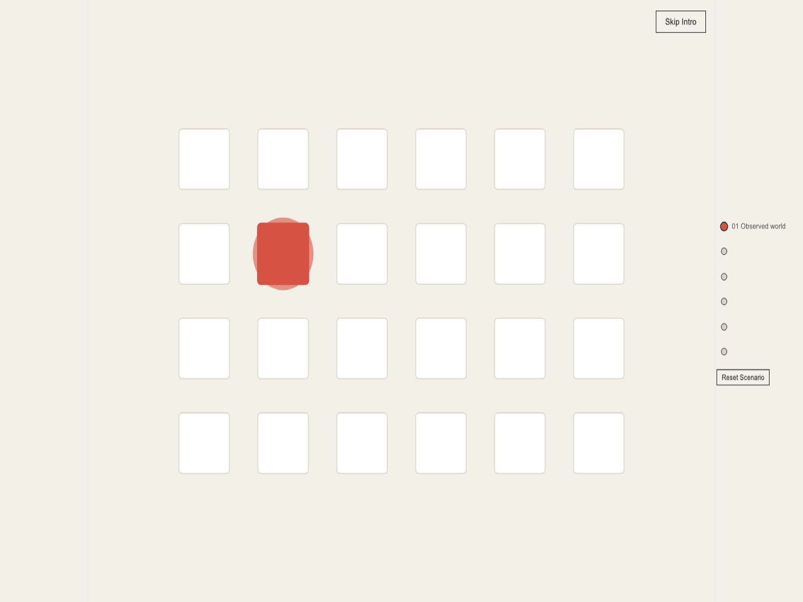

React · GSAP · Causal Inference · Synthetic Control · 2026-10
THE COUNTERFACTUAL CITY
An interactive urban world where statistical models reveal how different decisions could reshape outcomes: difference-in-differences, synthetic control, and placebo diagnostics, made cinematic and explorable.

The underlying panel is a fully synthetic city of 24 zones with a declared treatment, not real NYC trip-record data: a real, verified compatible external-control series was evaluated and explicitly deferred, not silently swapped in, and every number on the page is labeled synthetic. Every one of the 6 interactive controls triggers a real difference-in-differences and synthetic-control computation, in the browser, never a cosmetic state change; the browser's own TypeScript estimator is cross-checked against an independent Python oracle (scipy.optimize.nnls) to sub-1-unit agreement.
01 — The problem
"What would have happened if a city had chosen differently?" is the hardest question a dashboard can pose honestly: either the counterfactual is faked (a scripted animation dressed as inference) or it's real but buried behind econometrics jargon nobody outside a seminar room would read. This project asks whether difference-in-differences and synthetic control -- the same methods a real policy evaluation would run -- can be made into something explorable and cinematic without ever presenting a simulated number as an observed one, or a fitted estimate as a certainty.
02 — What I built
Six scroll-driven chapters, each hosting one real analytical interaction against a shared scenario: choosing the treated zone and intervention day (chapter 2) recomputes a real difference-in-differences estimate rendered right next to the controls that drive it; chapter 3 selects a donor pool of comparison zones with a real comparative-trajectories chart; chapter 4, the flagship moment, plots the treated zone's real observed outcome against its synthetic-control reconstruction as two diverging timelines, with donor weights adjustable live; chapter 5 is an inverted dark "diagnostic console" that runs a real placebo test across every untreated zone and plots the resulting null distribution as evidence bands, with the real effect's rank highlighted; chapter 6 swaps the outcome variable and states the identification assumptions (parallel trends, no interference, no anticipation) next to the result, not in a footnote. Two independent NNLS implementations -- a Python oracle (scipy.optimize.nnls, Lawson-Hanson) and a TypeScript projected-gradient-descent port for the browser -- solve the same donor-weighting problem and are checked for parity at the level of the recovered estimate, not bit-identical weights, since the panel's engineered parallel pre-trends mean many weight combinations fit almost equally well.
- Chapter 4, the flagship interaction: a real observed-vs-synthetic trajectory chart (not just a scroll-driven stage divergence) redraws live as donor weights change, with the exact uncapped gap value always shown next to a color/pulse encoding that is explicitly labeled as representing the gap's size and direction, not a prediction.
- Chapter 5, diagnostics: the project's own literal "null distribution" made real -- every placebo unit's effect plotted on a shared axis, the treated zone's own effect highlighted among them, not just stated as a rank and p-value in text.
- Every result labeled by claim kind: fitted estimate, counterfactual inference, or permutation diagnostic, each with its own adjacent caveat about what it does and doesn't license concluding.
Two real defects surfaced and were fixed during the build, both documented rather than quietly patched: a chapter-nav bug where the "01 Observed world" step never highlighted as active despite being the page's actual starting state (found by an independent adversarial review, root-caused to a retry condition that fired on ANY id being found rather than ALL of them), and a 0.79 Cumulative Layout Shift on first load, root-caused with a live layout-shift probe to chapter 2 sitting at the very top of the page before data arrived and then being pushed down wholesale once the cinematic intro mounted above it.
03 — How it was built
- 01
Two independent NNLS solvers, checked against each other, not just internally consistent
The Python oracle (
scipy.optimize.nnls, Lawson-Hanson active-set) and the browser's own TypeScript port (projected gradient descent) solve the same convex donor-weighting problem through genuinely different algorithms. Parity is checked at the level of the recovered estimate (the ground-truth ATT, weight feasibility) rather than bit-identical weights, because this panel's pre-trends are parallel by construction, so many donor-weight combinations fit almost equally well -- a documented, reasoned tolerance, not a loosened one.25/25 pytest: ground-truth ATT recovery (DiD + synthetic control), NNLS parity, placebo/pretrend diagnostics TS/Python synthetic-control agreement: sub-1-unit on all 3 outcomes (tolerance tightened from an initial 40-unit guess with headroom above observed drift) - 02
A worktree-isolated independent adversarial review, then a second pass independently re-verifying every fix
After the full 6-chapter build was functionally and visually complete, a fresh subagent reviewed it in an isolated git worktree with no access to the building session's own notes or
git log, and found 1 P0 (the chapter nav never highlighted the intro as the active step on load), 2 P1s (a dead-end error state in the donor-weights control that deleted the whole control instead of staying usable; no reproducible Python test setup from a clean checkout, becauserequirements.txtdidn't exist), and 2 P2s (a missing result caveat; a control with no local feedback on change). Every fix was reproduced against the pre-fix code first (viagit stash) to confirm it actually failed before counting the fix as done. A SECOND, separately worktree-isolated agent then re-verified all 5 fixes directly, reproducing each original finding's own repro steps against a real production build rather than reading the first session's account of how it was fixed: all 5 PASS, no partial fixes, no regressions. - 03
A real, measured 0.79 Cumulative Layout Shift, found and root-caused before publication
A local Lighthouse pass ahead of deployment found desktop Performance 76 and CLS 0.802 -- failing the release gate's own budgets. Rather than accept or loosen the threshold, a live layout-shift probe (hooking
PerformanceObserverdirectly, not just reading Lighthouse's own summary) pinpointed the exact cause: chapter 2 is always rendered regardless of the intro's own data-loading state, so for the roughly 140ms before the panel fetch resolves, it sits at the very top of the page; once ready, the full 400vh cinematic intro mounts above it and pushes it down, registering as chapter 2's own box collapsing to nothing in the viewport. Fixed by reserving the same 400vh slot in the loading placeholder so the swap moves nothing. Reverified: Performance 100, Accessibility 100, CLS 0.005. - 04
Performance measured per chapter, forward and reverse, against a genuinely idle baseline
Real production-build frame-pacing (hooked
requestAnimationFrameduring actual scroll passes, not an invented number) was taken for all 6 chapters, scrolling both forward and in reverse, alongside a true idle (no-scroll) baseline for comparison. Every chapter lands at ~60fps with 0 dropped frames, indistinguishable from the idle baseline -- meaning the app's real GSAP scroll choreography costs nothing measurable beyond doing nothing at all.
04 — Results
Full test suite green: 35/35 Vitest, 25/25 pytest (the Python oracle's own suite, reproducible from a clean checkout via a pinned requirements.txt), 128/128 Playwright end-to-end against a real production build (every chapter, every one of the 6 interactions, reverse-scroll determinism, reduced motion at every breakpoint, touch operability, axe-core), clean TypeScript and lint. Verified live against the actual public deployment, not only localhost: a separate 17-test live-URL-only Playwright pass (zero console errors, zero failed requests, all 6 chapters and interactions working, zero axe-core violations, no horizontal overflow at 3 breakpoints) plus Lighthouse run twice against the real public URL -- Performance 100, Accessibility 100, Best Practices 100, SEO 90, LCP 0.3s desktop / 1.5s mobile, CLS 0.005 / 0 -- both matching the local preflight numbers from the exact same build exactly.
Three deliberately different, independently inspected compositions at 1440x900, 768x1024 and 390x844, with scroll recordings turned into contact-sheet images and reduced-motion captures for every chapter at every breakpoint, all actually opened and read, not assumed from passing tests.
05 — What I'd do next
- The rest of the chapter-level visual-design pass (varied block treatment, texture/depth cues) beyond chapters 3 and 5's own rebuild away from a shared layout skeleton.
- Mobile/tablet frame-pacing measurement (currently desktop only; Lighthouse's own mobile pass covers load performance but not scroll frame-pacing specifically).
- A real, verified compatible NYC TLC external-control series, which was evaluated during planning and explicitly deferred in favor of a clearly labeled synthetic panel, not silently swapped in.